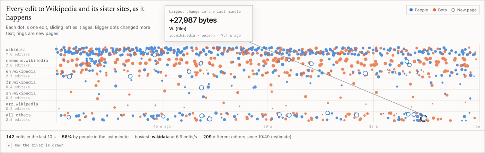
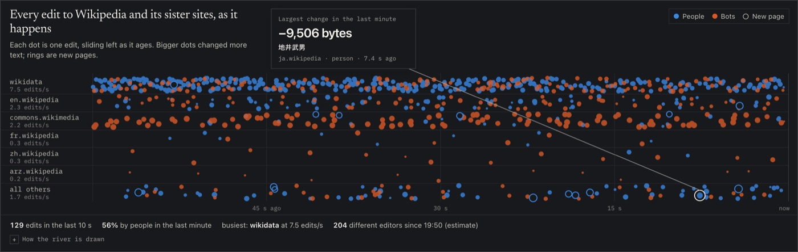
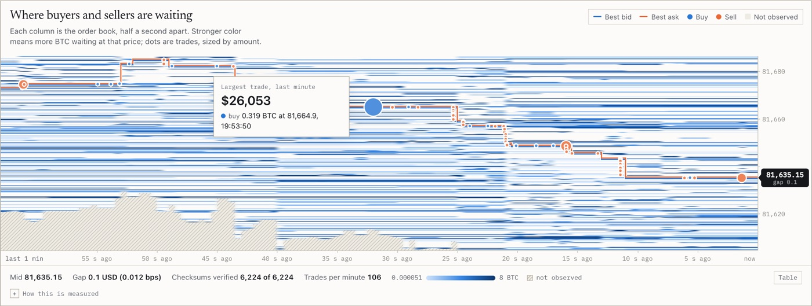
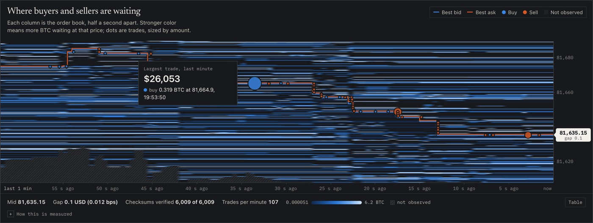
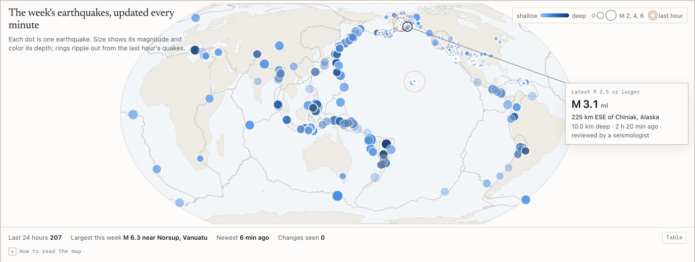
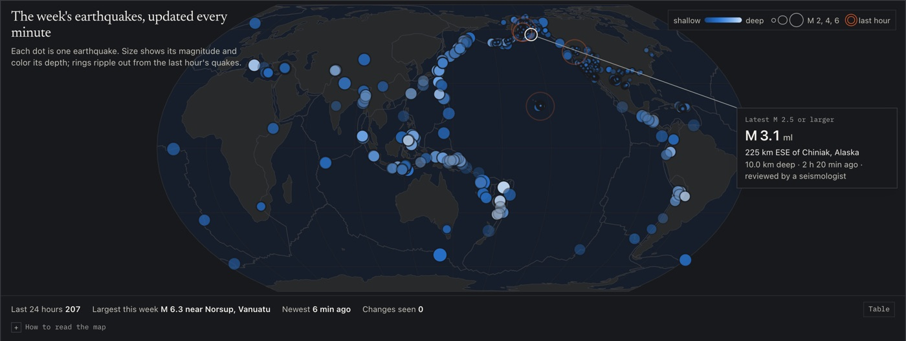
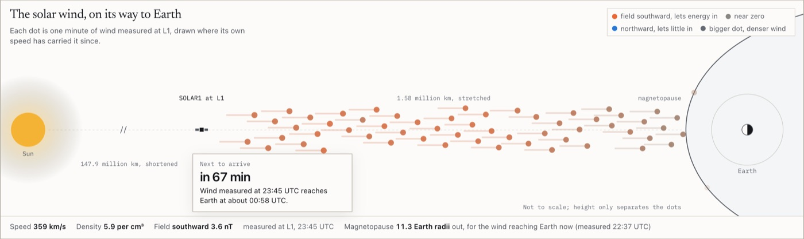
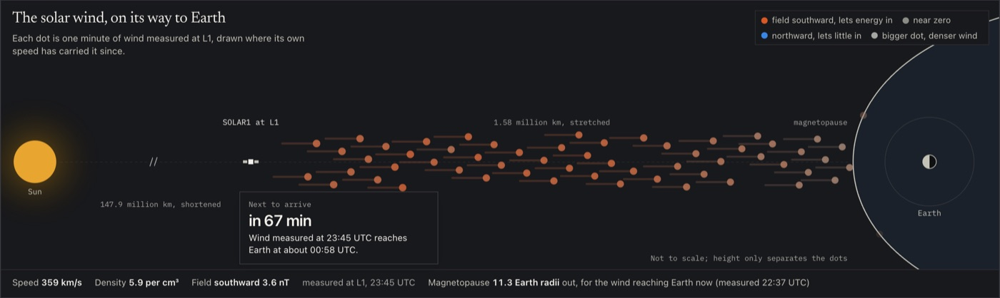

Four dashboards · real public data · computed in your browser
Live data, measured as it arrives
Each dashboard connects your browser straight to a public source and does the math on the page, with no server in between and no simulated numbers. Every estimate is checked against something it can be held to: an exact count, the exchange's own checksum, a published law, or a physical model.


Wikipedia, edit by edit
Every change to Wikipedia and its sister sites flows past as it happens. Three memory saving counting methods run beside exact counts, so you can watch how far each one drifts from the truth.
- Counts distinct editors from 4 KB of memory, next to the exact count (HyperLogLog)
- Finds the busiest pages, with a guaranteed error on every count (Space-Saving)
- Flags sudden bursts of editing as they happen


A Bitcoin order book you can trust
The page rebuilds Kraken's order book from more than a hundred updates a second and checks it against the exchange's own checksum after every one. Then it measures how buying and selling pressure moves the price.
- Every update verified, with automatic recovery on a mismatch
- A heatmap of where buyers and sellers are waiting, with every trade
- Price impact of order flow and volatility, computed live


Earthquakes, and how the record changes
The past week of earthquakes from the US Geological Survey, refreshed every minute. The page tests the classic law of how often big quakes happen, fits how aftershocks fade, and logs every time the catalog corrects itself.
- How much rarer each bigger magnitude is, with an uncertainty range (Gutenberg-Richter)
- How fast aftershocks die away, fitted from the data (Omori-Utsu)
- Every magnitude revision and deletion, as it happens


The solar wind, on its way to Earth
A spacecraft about 1.5 million km toward the Sun measures the solar wind roughly an hour before it reaches us. The page follows it to Earth, shows how hard it presses on Earth's magnetic field, and maps the aurora against Syracuse.
- An arrival countdown from the spacecraft's real position
- The edge of Earth's magnetic field, drawn live (Shue model)
- X-ray flares, the storm forecast, and the aurora map
How these are built
Your browser connects straight to each public source. Nothing passes through a server of mine and nothing is stored between visits. Data arrives as fast as the source sends it, and the page redraws a few times a second on its own schedule, so a burst of messages never freezes the screen.
The math lives apart from the drawing code and has its own test suite. Each method is checked against something with a known answer: the sketches against their error bounds, the order book against a captured exchange checksum, the earthquake statistics against synthetic catalogs, and the physics against published reference values. The run logs behind every number in the write ups sit in the repository beside the code.
Every chart has a table view. Colors are checked for color blindness, and each feed's status shows as a shape and a word as well as a color. Pausing the display freezes the drawing while the data keeps flowing in, so counts stay correct.
Where a number rests on an assumption, the caveat sits beside it: clock offset in delay figures, mixed magnitude scales in the earthquake statistics, and the simple travel time model behind the solar wind countdown.
Data: Wikimedia EventStreams, Kraken public WebSocket API, U.S. Geological Survey, NOAA Space Weather Prediction Center. None of this is investment advice. Back to the portfolio